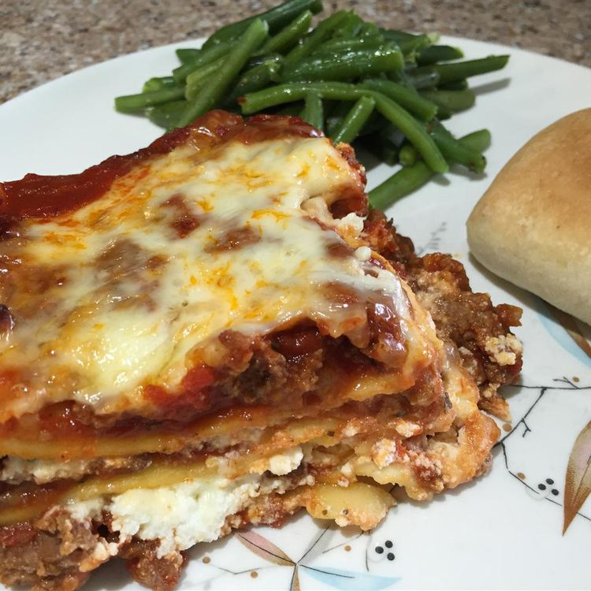

Lasagna

This is a recipe from a Delicious Lasagna. Enjoy :P
Ingredients
- 9 lasagna noodles
- 1 tablespoon olive oil
- 1 pound bulk italian sausage
- 4 cans sliced mushrooms, drained
- 4 cans tomato sauce
- 1 teaspoon garlic salt
- 1 teaspoon dried oregano
- 1/2 teaspoon dried basil
- salt and ground black pepper to taste
- 1 container ricotta cheese
- 3 large eggs, beaten
- 1/3 cup grated Parmesan cheese
- 1 pound shredded mozzarella cheese
Steps
Step 1
Preheat the oven to 350 degrees F (175 degrees C).Step 2
Cook ground beef and sausage in a large pot over medium heat; drain. Stir in tomato sauce, mushrooms, garlic salt, oregano, thyme, and basil; season with salt and black pepper. Simmer 30 minutes.Step 3
Meanwhile, bring a large pot of lightly salted water to a boil. Cook lasagna noodles with olive oil in the boiling water, stirring occasionally, until tender yet firm to the bite, 8 to 10 minutes. Drain.Step 4
Meanwhile, combine ricotta cheese, eggs, and Parmesan cheese in a bowl.Step 5
Cover bottom of a 9x13-inch baking dish with a thin layer of meat sauce; layer 3 lasagna noodles over top. Spread about 1/3 ricotta cheese mixture over noodles; sprinkle about 1/4 mozzarella cheese over top. Spoon about 1/3 meat sauce over mozzarella cheese. Repeat layering twice more, finishing with remaining mozzarella cheese.Step 6
Bake in the preheated oven until cheese melts and sauce bubbles, about 90 minutes. Cover lasagna with foil if cheese begins to get too dark. Let sit before serving for 10 to 15 minutes.
Home